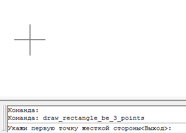

Команда:draw_rectangle_be_3_points
Команда:draw_rectangle_be_3_pointsПо трем точкам чертится прямоугольник
Команда:draw_rectangle_be_3_points
 Укажи первую точку жесткой стороны<Выход>:
Укажи первую точку жесткой стороны<Выход>:
 указывает точку, пустой ввод (нажатие ENTER) приводит к выходу из программы.
указывает точку, пустой ввод (нажатие ENTER) приводит к выходу из программы.
Укажи вторую точку жесткой стороны:
указывает точку вторую точки прямоугольника
Первые две точки образуют сторону прямоугольника к которой будут достраиваться остальные стороны под прямыми углами.
Укажи третью точку (высота прямоугольника):
указывает точку
Точка будет использована чтобы вычислить длинну второй стороны прямоугольника (перпендикуляр к первым двум точкам) и направление построения прямоугольника от оси первых точек.
Пример работы программы
